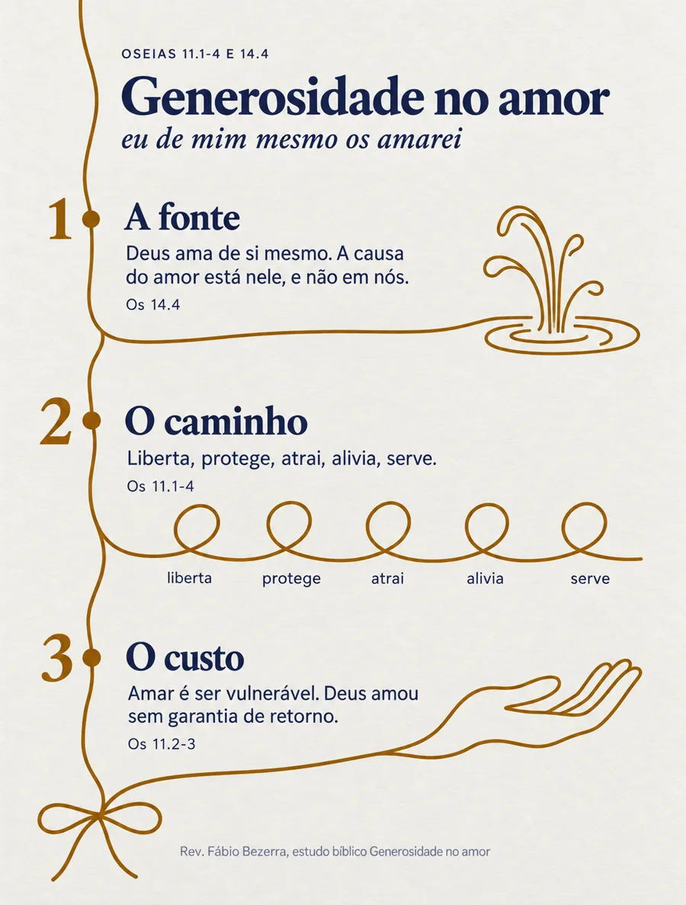
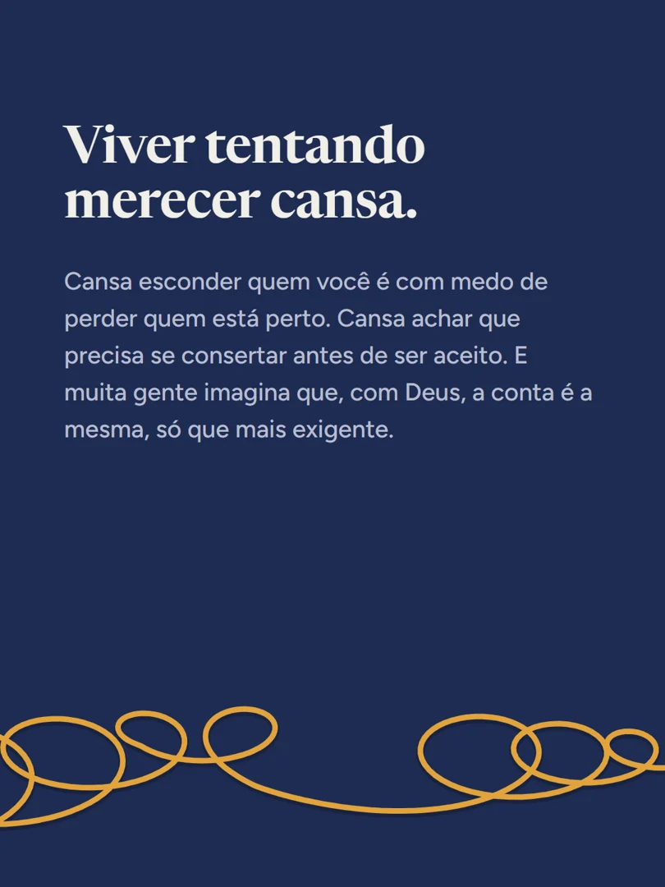
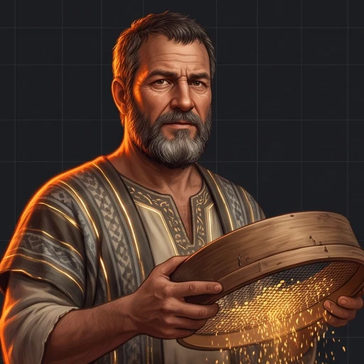
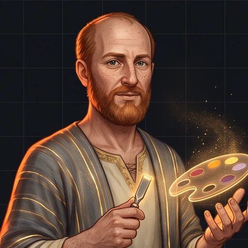
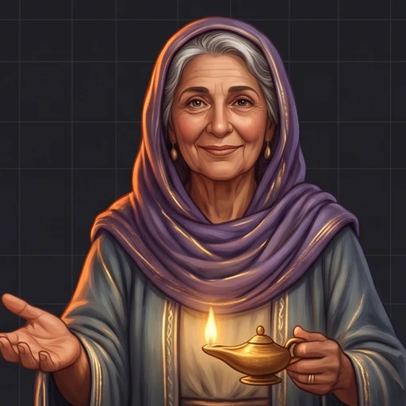
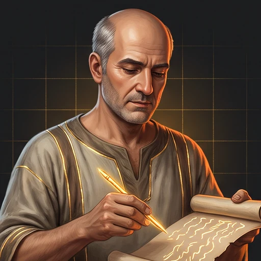

A semana dele virou outra coisa.
“E, quanto a nós, nos consagraremos à oração e ao ministério da palavra.”Atos 6.4
Os agentes fazem o trabalho repetido. O cuidado continua com gente.
Conhecer os timesEscolha um time e veja a igreja mudar.
Cada sermão vira cortes, estudo e posts para a semana inteira, e quem assistiu encontra o caminho até a igreja.



Gideão Garimpoacha os trechosUma pregação, cinco canais.
Cada domingo vira um pacote. O pastor aprova uma vez, e o mês fica cheio.
Quem viu, escreve. A Lídia responde. A igreja vai ao encontro.
O pastor continuou pregando. A igreja ganhou portas abertas a semana inteira.
Ver os outros times Voltar ao inícioUma trilha inteira para cada classe.
Uma revista genérica, ou um livro dividido entre professores.
Cada um aplica do seu jeito. O fio se perde.
Toque numa classe e veja o curso nascer.
Cada classe com sua cara. A mesma teologia.
Os professores recebem material para se preparar.
Teologia conferida, aula a aula.
Uma aula bem amarrada na outra.
Conteúdo e visual no estilo da sua igreja.
O Esdras fica no grupo da classe e explica a aula.
Os temas que mais voltaram e o que reforçar no próximo ciclo, classe por classe. (exemplo)
Ninguém precisa esperar o domingo para entender.
Edifica quem está dentro. Conversa com quem está fora.
Nove chamadas de evento. Nenhuma conversa.
Quem não é crente rola o feed e vai embora.
Para dentro, edifica. Para fora, conversa.

Bezalel Brandinga arteO pastor conversa com o Josué. O resto sai pronto.
Quem está dentro é edificado.
Quem está fora é convidado.
Cada evento sai pronto.
Ninguém some sem que o pastor saiba.
O visitante preenche o cartão. E a semana passa.
O cartão fica na gaveta. A pessoa não volta.
A Lídia recebe. A Isabel acompanha. A igreja abraça.

Isabel IntegraOs agentes avisam. Quem abraça é gente da igreja.
Lê os grupos autorizados. Não responde em nenhum.
Cada pedido vira uma visita marcada.
O time avisa.
Quem cuida é a igreja.
Cada lembrete ganha um dono. Você só confere.
As decisões do conselho se perdem entre uma reunião e outra.
A decisão espera três meses até alguém lembrar dela.
O secretário manda as notas. O Tércio escreve e lembra cada dono.

Tércio TintaA Febe junta os calendários. O Tércio fecha o ano.
A casa em ordem.
O pastor livre para a oração e a Palavra.